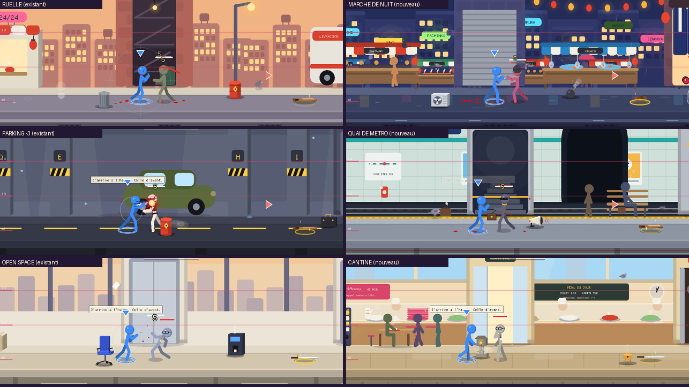
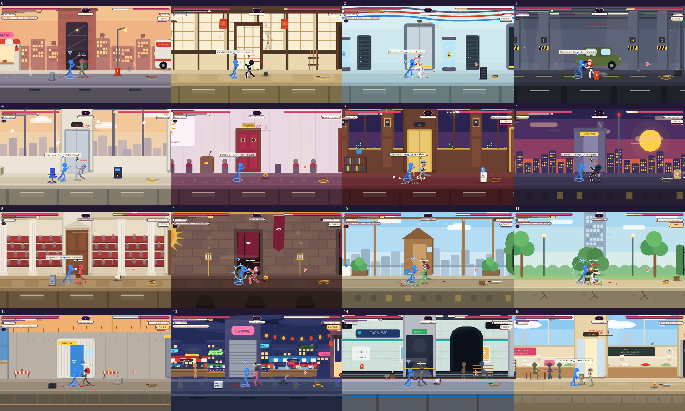
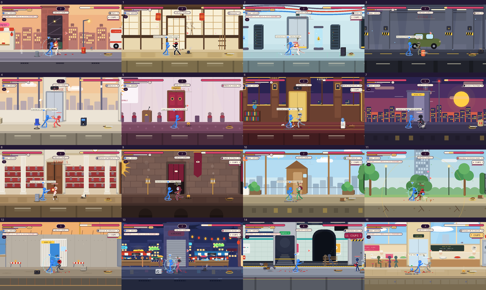
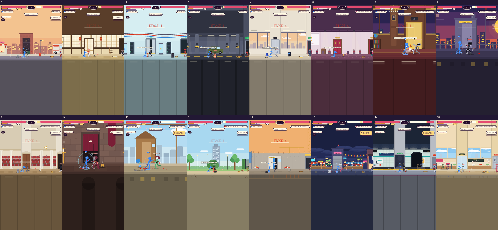

| # | Décor | Classe | Constat |
|---|---|---|---|
| 0 | Ruelle du quartier est | B | Immeubles du fond (defilement 0,35) : fenêtres aussi grandes que la tête d'un combattant. Echelle du plan moyen corrigee (x0,77). Trottoir : bon pour passants et pigeons. |
| 1 | Dojo souterrain | A | Un seul plan, pièce fermee, echelle des shoji et lanternes coherente avec les combattants. |
| 2 | Salle des serveurs | A | Mur plein et baies a l'echelle ; pas de fond lointain a corriger. Sans ciel : pas de météo possible. |
| 3 | Parking niveau -3 | A | Voiture a 1,5 H, piliers et marquages coherents ; ligne d'horizon très basse, convient aux animaux au sol. |
| 4 | Open space | B | Skyline (defilement 0,3) surdimensionnee : corrigee (x0,75). La baie vitree convient aux nuages et avions. |
| 5 | Seminaire de l'Éveil | A | Salle fermee, un plan : portes, pupitre et pouffes a l'echelle. |
| 6 | Étage presidentiel | B | Skyline (0,25) corrigee (x0,74). Ciel de nuit en baie : bon pour avions. |
| 7 | Toits de la tour | B | Skyline (0,4) corrigee ; le soleil (ciel, defilement < 0,2) reste tres grand : choix de style, non modifie. |
| 8 | Senat | B | Gradins du fond (0,5) corriges (x0,83) : les rangees de sieges ecrasaient les combattants. |
| 9 | Temple de l'Éveil | A | Mur de briques plein, pas de plan lointain : echelle des portiques et lanternes coherente. |
| 10 | Toit-jardin du team building | B | Skyline (0,3) corrigee (x0,75) ; garde-corps a hauteur de poitrine, bon pour oiseaux. |
| 11 | Parc de la tour | B | Haies du fond (0,4) corrigees ; arbres du premier plan et tour (0,05) inchanges. |
| 12 | Chantier de l'aile Est | A | Mur banche plein, grue au loin (ciel) : echelle des echafaudages coherente ; peu de profondeur pour les nouveautes. |